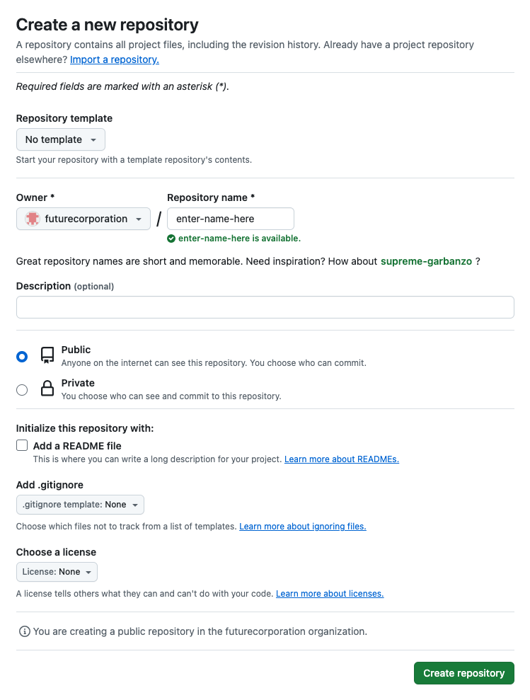
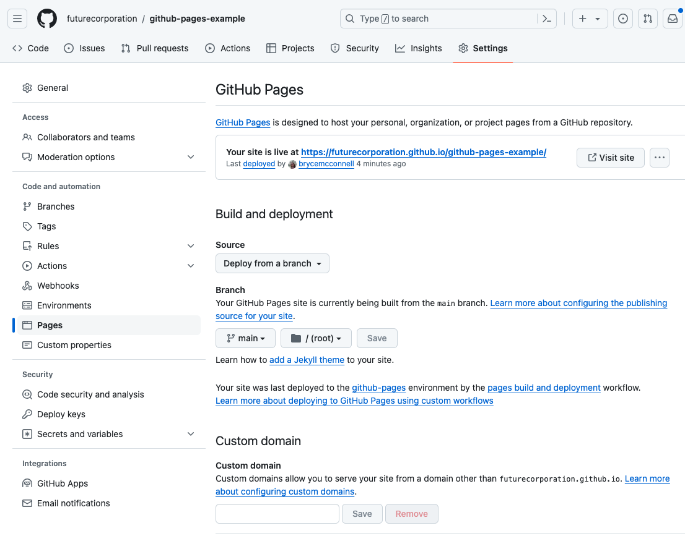

Github Pages Example
- You will need a Github account
- Join the futurecorporation github organisation
-
Create a new public repo

-
Add files to repo
- Drag and drop into the browser
- Edit using github's file editing functionality
- (Recommended) Use Github desktop to keep files in sync with your local files
- Use other git tools
-
In the settings tab, go to the pages section, select branch 'main' and leave the folder as /root, then press save

- Edit your code and 'commit' and 'push' your code (or alternatively use the web editor etc)
- Upon work being committed, the site will run an update process that takes a few seconds, you can view the status in the Actions tab
- Set a custom domain using the Custom domain section within the pages settings (Note: you will need access to the domain provider, eg Cloudflare, and will have to enter some DNS records as per the documentation)
Other notes
Any static files inside the repo are also accessible such as images and stylesheets

For more information see the documentation